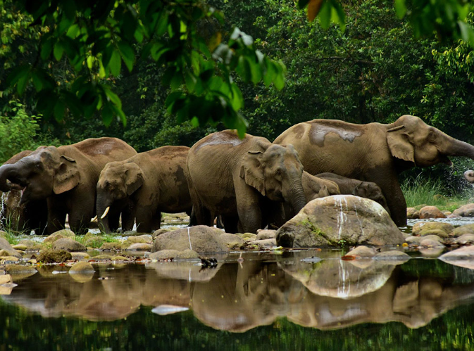
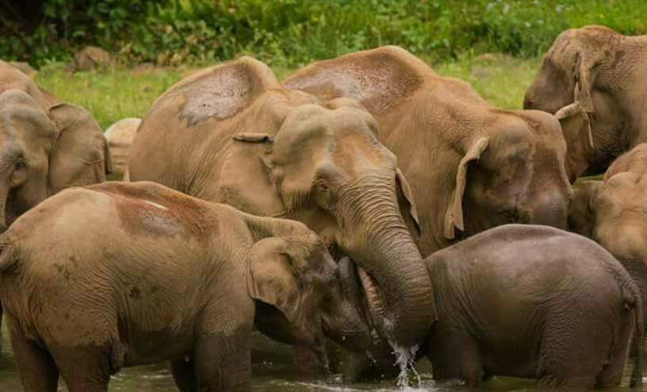
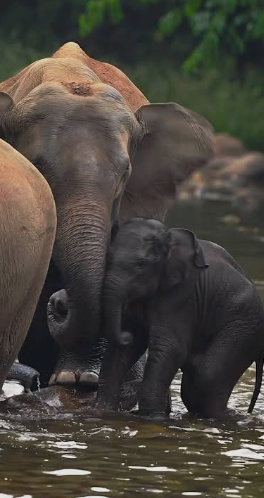
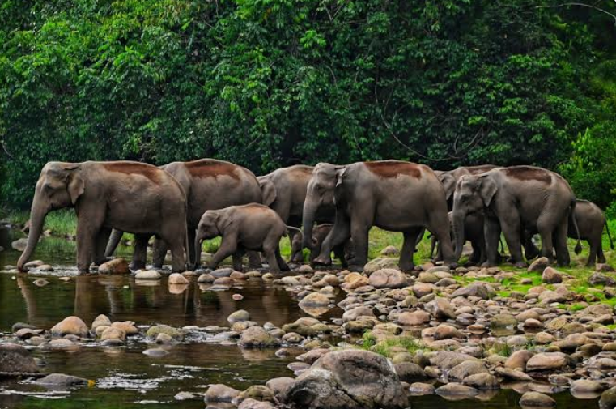
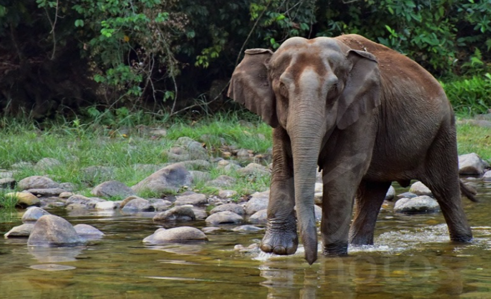

Aanakkulam is a beautiful eco-tourism village located in the Idukki district of Kerala. The name "Aanakkulam" means "Elephants' Pond" because wild elephants regularly visit the river and water pools in this area. Surrounded by dense forests, hills, and streams, Aanakkulam is one of the best places to observe elephants in their natural habitat without disturbing them.
Visitors can enjoy jeep safaris, nature walks, and breathtaking views of the surrounding Western Ghats. The peaceful environment, rich biodiversity, and frequent sightings of wild elephants make Aanakkulam a favourite destination for wildlife enthusiasts, photographers, and nature lovers. It is an ideal place to experience the untouched beauty of Kerala's forests.





Aanakkulam is a beautiful eco-tourism village located in Mankulam Panchayat of Idukki District, Kerala. It is situated about 40 km from Munnar and is famous for the unique sight of wild elephants gathering near the river. The name "Aanakkulam" means "Elephant Pond" in Malayalam. It is one of the few places where wild elephants and local people coexist peacefully.
The name "Aanakkulam" comes from the Malayalam words "Aana" (Elephant) and "Kulam" (Pond). The village got its name because wild elephants regularly visit the stream to drink its mineral-rich water. 1
Aanakkulam has been known for more than a century as a place where wild elephants frequently gather near the river. The village has become an important eco-tourism destination while preserving the natural habitat of elephants and the forests of the Western Ghats. 2
The main attraction is the gathering of wild elephants near the river, especially during the evening. Visitors can also enjoy waterfalls, forest streams, nature walks, jeep safaris, bird watching and beautiful landscapes of the Western Ghats. 3
Aanakkulam is surrounded by evergreen forests, bamboo, medicinal plants and many native species of the Western Ghats. The forests provide a safe habitat for elephants and other wildlife.
Today, Aanakkulam is one of Kerala's unique eco-tourism destinations. It is internationally known for the rare sight of wild elephants visiting the river naturally, making it a favourite destination for wildlife photographers, researchers and nature lovers. 4